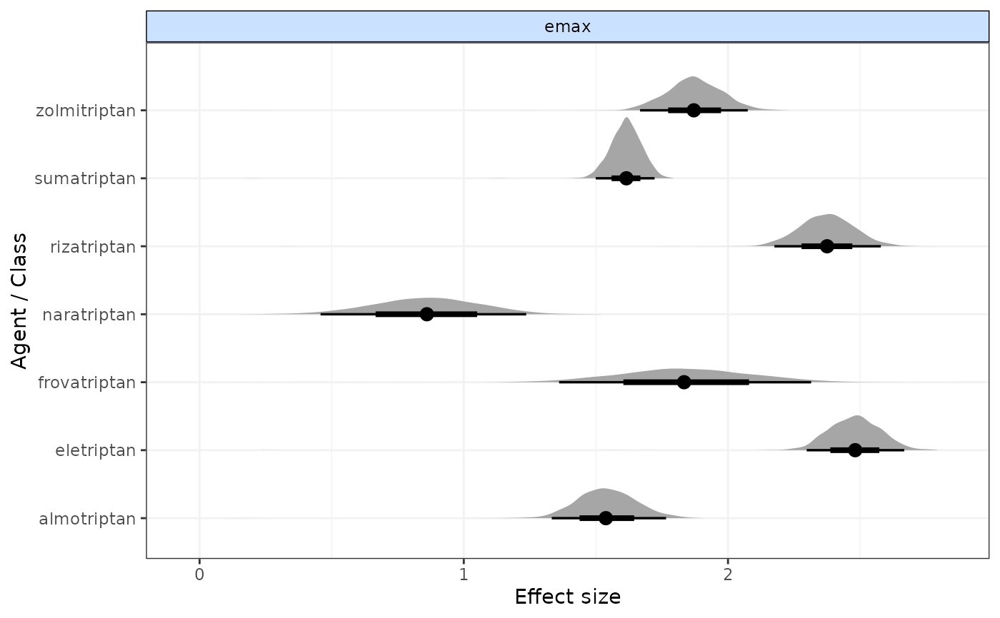
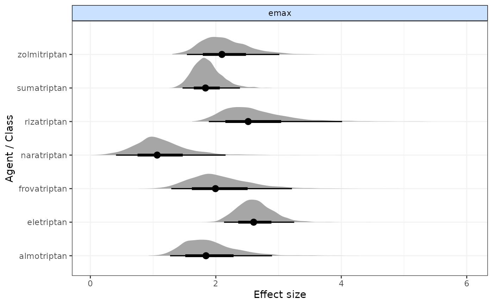

plot.mbnma.RdGenerates a forest plot for dose-response parameters.
# S3 method for class 'mbnma'
plot(x, params = NULL, ...)An S3 object of class "mbnma" generated by running
a dose-response MBNMA model
A character vector of dose-response parameters to plot.
Parameters must be given the same name as monitored nodes in mbnma and must be
modelled as relative effects ("rel"). Can be set to
NULL to include all available dose-response parameters estimated by mbnma.
Arguments to be passed to methods, such as graphical parameters
A forest plot of class c("gg", "ggplot") that has separate panels for
different dose-response parameters. Results are plotted on the link scale.
# \donttest{
# Using the triptans data
network <- mbnma.network(triptans)
#> Values for `agent` with dose = 0 have been recoded to `Placebo`
#> agent is being recoded to enforce sequential numbering
# Run an exponential dose-response MBNMA and generate the forest plot
exponential <- mbnma.run(network, fun=dexp())
#> `likelihood` not given by user - set to `binomial` based on data provided
#> `link` not given by user - set to `logit` based on assigned value for `likelihood`
#> Compiling model graph
#> Resolving undeclared variables
#> Allocating nodes
#> Graph information:
#> Observed stochastic nodes: 182
#> Unobserved stochastic nodes: 77
#> Total graph size: 3658
#>
#> Initializing model
#>
plot(exponential)

# Plot only Emax parameters from an Emax dose-response MBNMA
emax <- mbnma.run(network, fun=demax(), method="random")
#> `likelihood` not given by user - set to `binomial` based on data provided
#> `link` not given by user - set to `logit` based on assigned value for `likelihood`
#> Compiling model graph
#> Resolving undeclared variables
#> Allocating nodes
#> Graph information:
#> Observed stochastic nodes: 182
#> Unobserved stochastic nodes: 197
#> Total graph size: 4115
#>
#> Initializing model
#>
plot(emax, params=c("emax"))

#### Forest plots including class effects ####
# Generate some classes for the data
class.df <- triptans
class.df$class <- ifelse(class.df$agent=="placebo", "placebo", "active1")
class.df$class <- ifelse(class.df$agent=="eletriptan", "active2", class.df$class)
netclass <- mbnma.network(class.df)
#> Values for `agent` with dose = 0 have been recoded to `Placebo`
#> agent is being recoded to enforce sequential numbering
#> Values for `class` with dose = 0 have been recoded to `Placebo`
#> class is being recoded to enforce sequential numbering
emax <- mbnma.run(netclass, fun=demax(), method="random",
class.effect=list("ed50"="common"))
#> `likelihood` not given by user - set to `binomial` based on data provided
#> `link` not given by user - set to `logit` based on assigned value for `likelihood`
#> Compiling model graph
#> Resolving undeclared variables
#> Allocating nodes
#> Graph information:
#> Observed stochastic nodes: 182
#> Unobserved stochastic nodes: 192
#> Total graph size: 4108
#>
#> Initializing model
#>
# }